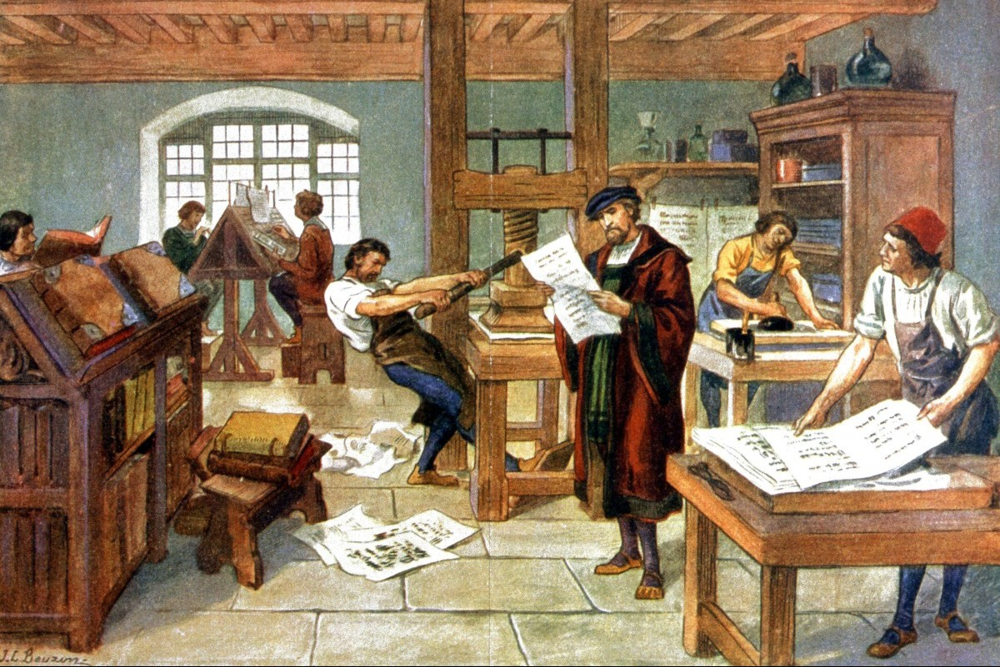

Historical context
The Renaissance was a cultural and artistic movement of the 15th and 16th centuries that marked the beginning of the Modern Age in Europe.
- A changing society (the bourgeoisie): wealthy merchants and bankers in the cities gained enormous economic power. They used their money to become patrons, funding artists to gain prestige, whilst the feudal nobility lost its former influence.
- Monarchies and Capitalism (Politics and Economy): kings concentrated power by establishing authoritarian monarchies (the origin of the modern state). At the same time, the medieval agrarian economy gave way to a commercial form of capitalism based on banking, currency and maritime trade with the Americas.
- Crisis and Anthropocentrism (Religion): the mindset shifted towards anthropocentrism (the human being as the centre of everything, using reason and science). Furthermore, the Church was fractured by Martin Luther’s Protestant Reformation, which divided Europe along religious lines.
- The Information Revolution (The Printing Press): Gutenberg’s invention enabled the mass reproduction of books, making culture more affordable. It was the key tool that allowed the ideas of scientists, humanists and religious reformers to spread rapidly across the continent.
During the Renaissance, music underwent major changes, particularly in the field of vocal music. The Renaissance was the era of polyphony, or multi-voice composition, which definitively supplanted medieval monody.
 |
 |
 |
What are we going to learn?
2. Renaissance music
2.1 – Sacred vocal music
2.2 – Secular vocal music
2.3 – Instrumental music
2.4 – Renaissance instruments